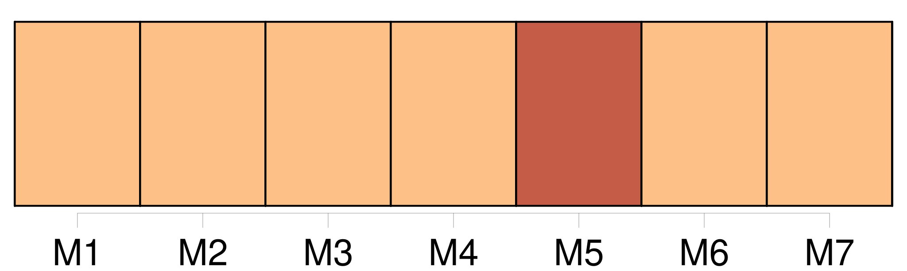
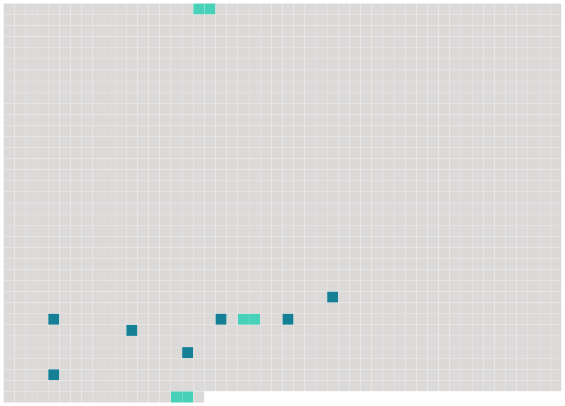

Longueur nb maillons : 10 mentions |
  |
Elles ne s'étaient point fait prier, sûres d'être bien payées, connaissant d'ailleurs [les Prussiens] , depuis trois mois qu'elles en tâtaient, et prenant leur parti des hommes comme des choses. [41 phrases] Sitôt que [nous] paraissons, ils foutent le camp!! [3 phrases] serions [-nous] ici, s'ils étaient braves!! » Et il s'animait : « [Nous] sommes [leurs maîtres] !! à [nous] la France!! [1 phrases] Il se leva, tendit son verre jusqu'au milieu de la table et répéta : « A [nous] la France et les Français, les bois, les champs et les maisons de France!! [4 phrases] Alors, le petit marquis posa sur la tête de la juive sa coupe de Champagne emplie à nouveau : « A [nous] aussi, cria-t -il, toutes les femmes de France!! [1 phrases] Les lèvres tremblantes, elle bravait du regard l'officier qui riait toujours, et elle balbutia, d'une voix étranglée de colère : « Ça, ça, ça n'est pas vrai, par exemple, [vous] n'aurez pas les femmes de France. [3 phrases] Je ne suis pas une femme, moi, je suis une putain ; c'est bien tout ce qu'il faut à [des Prussiens] |
 |
La ressource peut être téléchargée sur la page Ortolang
Si vous avez des questions ou vous voyez des erreurs, merci d'envoyer un mail à silvia.federzoni89@gmail.com
Site développé par S. Federzoni (contact)